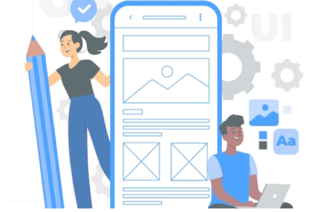

Conviertete en un diseñador UX/UI

La ruta de Diseñador UI/UX te llevará a través de 6 niveles progresivos, abarcando temas clave que te convertirán en un profesional experto en diseño de productos digitales
En este nivel te sumergirás en los fundamentos del diseño de productos digitales, aprendiendo cómo ser un Product Designer y explorando los fundamentos de UX/UI. Además, adquirirás conocimientos sobre metodologías de diseño y modelos de comportamiento humano.
En el nivel 2, te sumergirás en los fundamentos del diseño de productos digitales, aprendiendo cómo ser un Product Designer y explorando los fundamentos de UX/UI. Además, adquirirás conocimientos sobre metodologías de diseño y modelos de comportamiento humano.
En el nivel 3, te adentrarás en las metodologías de investigación y aprenderás sobre gestión de procesos UX, design thinking, prototipado, user testing y diferentes técnicas de investigación cuantitativa y cualitativa.
En el nivel 4, te enfocarás en el diseño de interfaces y la usabilidad, explorando temas como arquitectura de información, diseño de interfaces UI, herramientas de prototipado como Figma y la importancia de la usabilidad práctica y las pruebas de usabilidad.
En el nivel 5, te sumergirás en el mundo de los sistemas de diseño, aprendiendo sobre principios, patrones y componentes en sistemas de diseño, accesibilidad web, prototipado y testing.
Finalmente, en el nivel 6, explorarás el UX Writing y el Storytelling, adquiriendo habilidades en investigación de CX, UX Writing básico y avanzado, y descubriendo cómo utilizar la narrativa y el storytelling para crear experiencias impactantes.